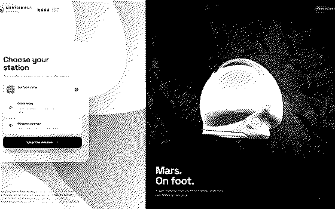
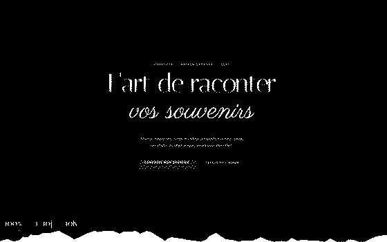
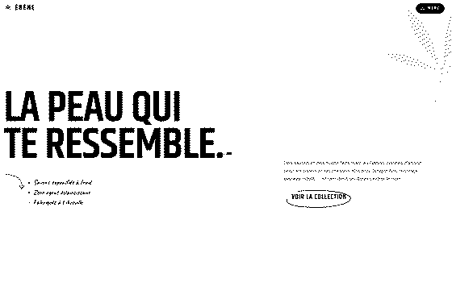
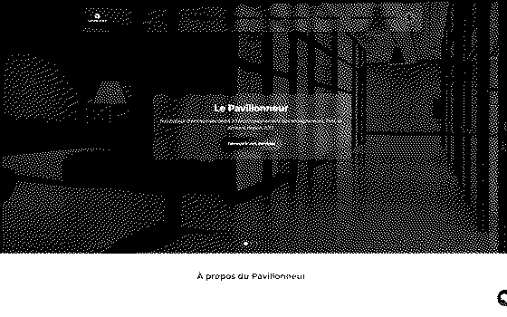
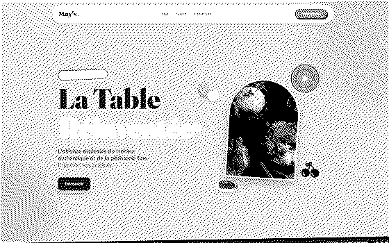

qui je suis
Diplômé en intelligence artificielle et big data à l'IUT & SN, à Libreville. Ce que j'aime vraiment, c'est ouvrir les machines. Découvrir le cœur d'un appareil, suivre le chemin du courant, trouver la pièce qui a lâché. Les étudiants du campus m'apportent leurs ordinateurs, et je ne me souviens pas d'en avoir refusé un.
Cette curiosité décide de ma façon de coder. Je n'installe pas une bibliothèque sans savoir ce qu'elle contient, et je n'écris pas une ligne que je ne saurais pas réparer six mois plus tard. Un site qu'on peut ouvrir, lire et réparer vaut mieux qu'un paquet qu'on remplace en entier.
En 2026, SUNU Assurances m'a retenu parmi soixante étudiants recrutés dans tout le pays. J'y ai construit un outil interne, utile et stratégique, et le rapport a été soutenu avec mention Très Bien. Deux mois à comprendre un métier que je ne connaissais pas, avant d'écrire la première ligne.
Je dirige Devs-Solutions, une équipe gabonaise qui ne sépare pas le logiciel du matériel : on écrit l'application, on pose le réseau, et quand la machine tombe c'est nous qui revenons. Nos clients gèrent une école, une pharmacie, une compagnie de transport.
Ce qui m'occupe maintenant : faire tourner l'apprentissage automatique avec moins. Compresser les modèles, les quantifier, les élaguer. Toujours la même question : qu'est-ce qui est vraiment nécessaire ici ?
Les projets
Dix pièces. Quatre que je peux ouvrir, six que vous pouvez simplement visiter.
-
Traitement de documents
ArchiVite
Photographier un acte de naissance au téléphone, laisser le modèle en extraire les champs, les faire vérifier par un agent en quelques secondes, archiver. Pensé pour les mairies et les préfectures.
FastAPI · React · PostgreSQL · deux modèles de vision
Ouvrir la fiche technique
J'ai comparé quatre modèles de vision sur le même acte. Le gain n'est pas venu du modèle, il est venu d'un recadrage.
4,7sur 11
6,7sur 11
Les API de vision ramènent toute image à un budget de jetons fixe : une photo où l'acte occupe un quart du cadre en gaspille les trois quarts sur le mur du bureau. Le prétraitement vaut plus que deux générations de modèle. Le chiffre qui décide n'est pas l'exactitude
C'est le nombre de champs faux et annoncés comme sûrs : ils passent sans relecture et entrent tels quels dans les archives de la commune. C'est pour ça que j'ai retenu le modèle gratuit et non le plus précis.
Même acte, même vérité terrain, trois essais, 2 novembre 2026 Modèle Exacts/11 Erreurs silencieuses Délai Coût gemini-3.5-flash-lite retenu 6,7 0 à 0,7 7 s gratuit gemini-3.6-flash 6,0 1 à 5 instable 15 s gratuit gemini-3.8-flash lecture supérieure — > 120 s hors délai gratuit claude-opus-5 7,0 0 20 s ~0,06 $/doc Je n'ai pas mesuré sur de vrais registres, et c'est volontaire
Un acte réel porte l'état civil d'une personne : on ne l'envoie pas à un modèle en ligne, encore moins sur un palier gratuit qui s'en sert pour entraîner. J'ai donc écrit un générateur d'actes fictifs à remplir à la main, dont la vérité terrain est engendrée avant d'être écrite.
-
Stage · confidentiel
SUNU Assurances
Sélectionné dans une cohorte de 60 étudiants recrutés au niveau national. Deux mois, rapport soutenu avec mention Très Bien. J'y ai construit un ⬛⬛⬛⬛⬛⬛ conversationnel. L'outil est resté chez eux : il avait une valeur concurrentielle, et ce n'est pas à moi d'en faire une vitrine.
Ce que vous ne voyez pas ici est exactement ce que je ne montrerai pas de votre projet.
-
Foncier · hors ligne
Nkunkuma
Dossiers fonciers pour un professionnel à Libreville : propriétaires, parcelles, pièces de procédure, scans PDF. S'installe comme une application, fonctionne sans connexion, et aucune donnée nominative ne quitte sa machine : la loi gabonaise n°025/2023 a décidé de l'architecture avant la première ligne de code.
Trois fichiers écrits à la main · IndexedDB · aucune dépendance
-
Apprentissage automatique
Prédiction de solvabilité
Quatre modèles, un seul pipeline, 18 322 clients au test. Le plus exact manque plus d'un insolvable sur deux ; le moins exact en attrape huit sur dix. Sur un problème déséquilibré, choisir la métrique est la vraie décision de modélisation.
scikit-learn · imbalanced-learn · SMOTE · GridSearchCV
-

NASA SPACE APPS · 2026
Martian Map
Avec l’équipe DevSec, à l’édition de Libreville, les 14 et 15 novembre. Un itinéraire de marche sur le mont Sharp, tracé sur l’imagerie HiRISE et un modèle d’élévation au mètre : 1,57 km, +88 m, pente maximale 19,8°, 0,024 mSv de dose sur la sortie. Le terrain est trié en trois couleurs : sous 10° on marche, de 10 à 20° prudence, au-delà c’est interdit.
Three.js servi en local · modèle 3D NASA · HiRISE, RAD, REMS
-

Site livré
LEYLOR
Proposition de refonte pour une maison créative de Libreville. Tout est papier : les sections se séparent par des déchirures tracées au chargement, jamais deux fois les mêmes, et le catalogue est un album qu'on feuillette.
Aucune dépendance · déchirures SVG génératives
-

Site livré
ÉBÈNE
Savons saponifiés à froid et huiles pressées à froid, faits main à Libreville. Pas de panier : la vente de cosmétiques en ligne est interdite au Gabon et Stripe n'y opère pas. Le site convainc, la commande se conclut sur WhatsApp.
Trois fichiers écrits à la main · aucune dépendance
-

Site livré
Assistant Pavillonneur
Le chatbot du site d'un incubateur d'entreprises. Aucun modèle de langage : une base de réponses écrite à la main, appariée par mots-clés, avec le renvoi WhatsApp ajouté à chaque réponse. Instantané, gratuit par visiteur, et incapable d'inventer un tarif.
-

Collectif
Devs-Solutions
Une initiative que je dirige : des étudiants qui construisent des solutions numériques pour des clients à Libreville. Ce que j'y ai appris ne s'apprend pas en cours : un cahier des charges se gagne en écoutant quelqu'un décrire son métier.
-

Avant la règle
May's
Traiteur et pâtisserie, à Libreville. Les plats, les photos, la commande sur WhatsApp. Janvier 2026, l’affaire de ma sœur, et mon premier site livré.
sélections
-
14–15 novembre 2026 NASA Space Apps Challenge
Édition du Grand Libreville · équipe DevSecQuarante-huit heures sur de vraies données de la NASA, et l'échelle change. Ce ne sont plus des jeux d'exercice : les relevés viennent d'un satellite en orbite autour de Mars, et il faut en tirer quelque chose qui tienne debout avant dimanche soir. Ce que j'en garde n'est pas un classement. C'est d'avoir mesuré ce que je sais faire contre des équipes du pays et du monde entier, et d'avoir vu que depuis Libreville la distance est plus courte qu'on ne le dit.
Ouvrir le dossier
L'équipe DevSec sur le site de Libreville. Je suis celui de gauche. Signé Marc Kuchner, Program Scientist : for outstanding participation and efforts. Le défi pris : Interplanetary Survival Guide, Martian Map. Un itinéraire de marche sur le mont Sharp, tracé sur les images HiRISE de la sonde Mars Reconnaissance Orbiter.
m'écrire
Je cherche des opportunités en développement, en données et en intelligence artificielle. Le plus rapide est l'adresse ci-dessous. Je réponds en français, en anglais, et je travaille la troisième.
- github.com/firstged
- linkedin.com/in/gedeon-mouloundi
- Libreville, Gabon
- Français · English · 日本語 (en cours)